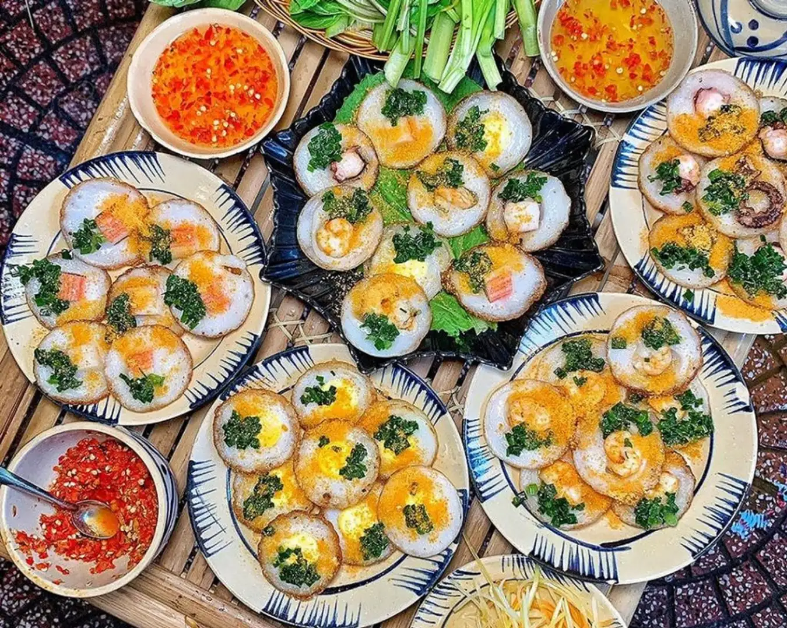

バンコット
ブンタウ名物の「バンコット」は、外はカリッと、中はもちもちの小さな米粉パンケーキです。エビをのせてココナッツミルクをかけ、特製の甘酸っぱいヌクチャムにつけて食べます。焼きたての香ばしさと、海の幸の旨味が絶妙にマッチ。地元の市場や屋台で気軽に楽しめ、観光客にも大人気。家族で囲む食卓にはいつも笑顔が溢れ、この一皿がブンタウの家庭の味を象徴しています。
ブンタウ名物の「バンコット」は、外はカリッと、中はもちもちの小さな米粉パンケーキです。エビをのせてココナッツミルクをかけ、特製の甘酸っぱいヌクチャムにつけて食べます。焼きたての香ばしさと、海の幸の旨味が絶妙にマッチ。地元の市場や屋台で気軽に楽しめ、観光客にも大人気。家族で囲む食卓にはいつも笑顔が溢れ、この一皿がブンタウの家庭の味を象徴しています。
ブンタウは「海鮮の楽園」と呼ばれるほど、魚介が豊富です。朝早く港で水揚げされた魚や貝がそのままレストランに運ばれ、どの店でも新鮮さが自慢。特に貝のグリル、蒸しカニ、レモングラスで煮たイカは絶品です。夜になると、海沿いの屋台通りに灯りがともり、炭火の香りが漂います。観光客はもちろん、地元の人も集う人気スポットです。
ブンタウでは「海を眺めながら過ごす時間」もグルメの一部です。カフェのテラス席に座り、潮風を感じながらコーヒーを味わうひとときは格別。昼間は明るい太陽の下で爽やかに、夜は波音をBGMにロマンチックに過ごせます。ベトナムコーヒー独特の濃厚な香りと、ブンタウの風が織りなす時間は、旅の思い出として心に残ります。
朝のブンタウは早起きが楽しくなる街です。市場には湯気の立つフォーやバインミーの屋台が並び、香草とスープの香りが漂います。地元の人々は出勤前に一杯のフォーを食べながら談笑し、観光客もその中に自然と溶け込めます。ブンタウの朝は、静けさと活気が同時に感じられる特別な時間です。
夜になると、ブンタウの通りは屋台でいっぱいになります。焼きトウモロコシ、揚げバナナ、タピオカドリンクなど、香ばしい匂いが漂う中を歩くだけで楽しい気分に。地元の若者たちは友人とおしゃべりしながら軽食を楽しみ、観光客はローカルフードを通して町の雰囲気を味わえます。ブンタウの夜市は、食と人の笑顔があふれる場所です。